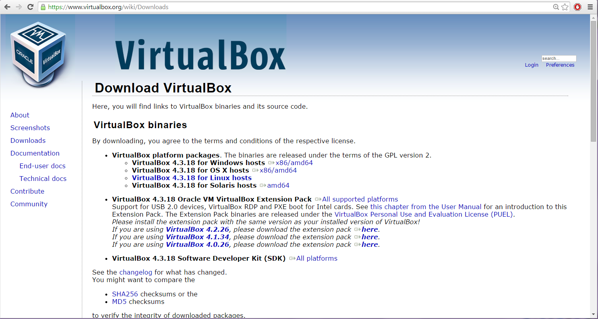

DOWNLOAD AND INSTALL VIRTUAL BOX
VirtualBox is a free, open-source software that allows you to run multiple operating systems on your computer simultaneously in a virtual machine. In this step, we'll walk you through how to download and install VirtualBox, the software that will enable you to create a virtual environment for Linux Mint.
1. Downloading VirtualBox
To download VirtualBox, follow these steps:
Step 1: Visit the VirtualBox Website
Go to the official VirtualBox website at: https://www.virtualbox.org
Step 2: Download the Installer
On the download page, choose the version that matches your host operating system:
- Windows: Windows Hosts
- macOS: OS X Hosts
- Linux: Linux Distributions
Step 3: Save the File
Click on the appropriate link, and the installer file will begin downloading. Save the file to your computer.
2. Installing VirtualBox
Once the file is downloaded, install VirtualBox based on your operating system:
For Windows Users
- Locate the downloaded file (e.g., VirtualBox-
-Win.exe ) and double-click it to run. - The VirtualBox Setup Wizard will open. Click Next to proceed.
- Choose installation options (use default settings) and click Next.
- When prompted about Network Interfaces, click Yes to continue.
- Click Install to begin the installation process.
- Once complete, click Finish to close the wizard.


For macOS Users
- Open the downloaded .dmg file.
- Double-click the VirtualBox.pkg file to launch the installer.
- Follow the instructions in the installation wizard and enter your admin credentials when prompted.
- Once installed, VirtualBox will appear in your Applications folder.

For Linux Users
- Open a terminal and update your package manager.
- Alternatively, download the Linux-specific installer (.deb or .rpm) from the website. 
- After installation, launch VirtualBox from the terminal with the command:
sudo apt update
sudo apt install virtualbox
virtualbox
3. Verifying the Installation
After installation, confirm VirtualBox is working:
- Open VirtualBox from your Applications or Start Menu.
- Click on New to create your first virtual machine and ensure everything works correctly.

SETTING UP THE VIRTUAL MACHINE
Once VirtualBox is installed, set up a Virtual Machine (VM) for Linux Mint:
- Open VirtualBox and click on New.
- Give the VM a name (e.g., "Linux Mint").
- Select the operating system type: Linux and version: Ubuntu (64-bit).
- Allocate memory (RAM): at least 2048 MB.
- Create a Virtual Hard Disk and follow the default prompts.

Now your virtual machine is ready to install Linux Mint!